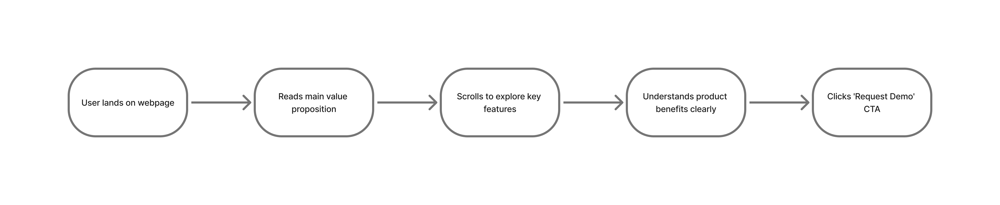
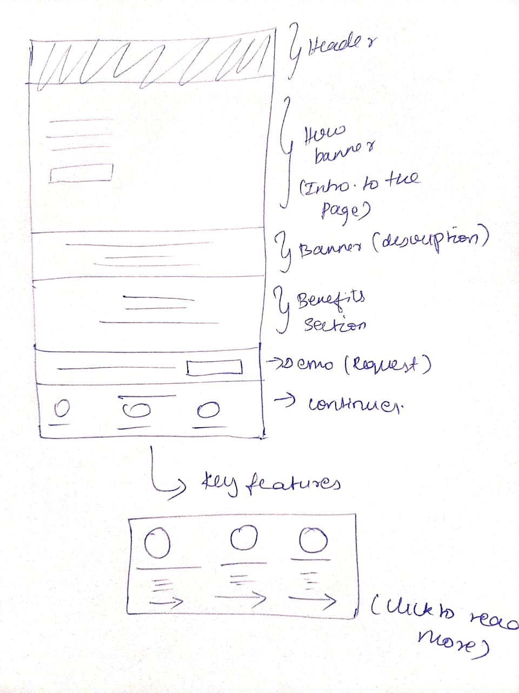
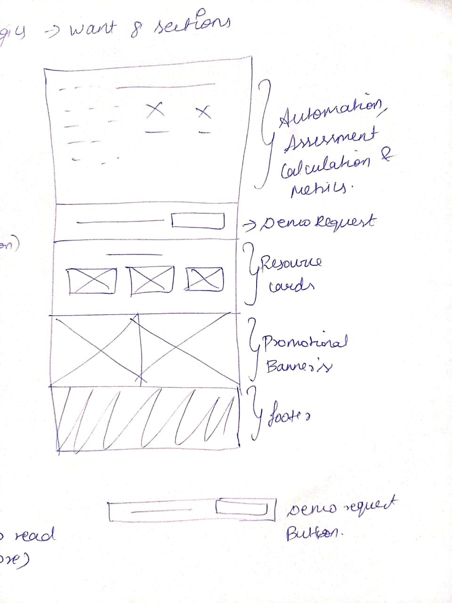

LoanLogics – Marketing Website UI Revamp
Role: UI/UX Designer & Front End
Duration: 17 months
Type: Enterprise B2B – Financial / Mortgage Document Automation
Team: Product Owner, Marketing Team (Including VP), Dev Team, UI/UX Team, QA
Tools: Figma, Adobe XD, Jira, Photopea, HTML/CSS
1. Project Overview
LoanLogics wanted to revamp their marketing website to align with the launch of LoanBeam®,
their mortgage income calculation automation tool.
My role was to help the marketing + design team:
- Define a consistent UI structure across pages
- Create reusable templates and design components
- Ensure the site reflected the new automation-focused brand direction
- Improve content clarity and lead-generation flow
Since the product is B2B financial tech, clarity, trust, and compliance were key.
2. Business Goals
When I began redesigning the LoanLogics marketing pages, one of the first things I understood was that the brand didn’t want a flashy
or overly creative experience. They wanted the pages to be clean, minimal, and straightforward, because their audience is
not everyday consumers, but lenders, processors, and enterprise decision-makers who value clarity over decoration.
After speaking with stakeholders and reviewing how competitors communicate similar solutions, I identified five core
business goals for this redesign:
- Increase demo requests
- Improve page engagement
- Communicate product benefits more clearly
- Align LoanLogics and LoanBeam brand identity
- Build a scalable page structure for future updates
3. Problem Statement
When we started working on the LoanLogics marketing experience, one challenge became clear:
The existing marketing pages were not telling the story of the product effectively.
Although functional, they felt disconnected, each page looked slightly different, the content
density was high, and the visual hierarchy was not helping users understand the key value proposition.
What we observed
Users had to scroll through large blocks of text before understanding what LoanLogics actually offered.
- There was no unified layout, so each page felt like it belonged to a different brand.
- The benefits and features were not highlighted, making it difficult for first-time visitors to grasp value quickly.
- The primary action — Request Demo CTA — was poorly placed and often missed.
- Banner sections were visually plain, lacking storytelling and visual cues to drive engagement.
- Frequent updates made it clear that the pages needed a modular, reusable UI system that could scale.
Why this was a problem
For a marketing site, first impressions matter. Visitors typically spend less than 10 seconds deciding
whether a product is worth exploring.
LoanLogics needed:
- A structure that communicated trust,
- A visual language that felt modern and consistent,
- A page layout that gently guided users toward requesting a demo.
Challenge: To transform a text-heavy, inconsistent experience into a clean, minimalist, and conversion-friendly marketing journey,
without overdesigning or complicating the product story.
4. Research & Discovery
A. Stakeholder Alignment
To ensure the new marketing pages supported both business objectives and user needs, I collaborated with key internal stakeholders
such as product leadership, marketing, and engineering.
What we learned:
- Content needed to highlight automation, accuracy, and enterprise-grade reliability.
- The marketing pages had to support the company’s lead-generation strategy.
- A consistent visual pattern — banner → value → CTA → content blocks — was required across all pages.
B. Competitor Landscape Review
I conducted a high-level review of leading fintech and mortgage-tech websites to understand industry standards for B2B marketing pages.
Patterns consistently observed:
- Clear hero message with a prominent CTA
- Benefit blocks arranged in simple 3–4 item grids
- Use of numbers and data points to build trust
- Clean visuals and purposeful whitespace
- Minimalist storytelling with focused messaging
These patterns helped define a direction that was modern, simple, and conversion-friendly, matching the brand’s
preference for clean UI.
C. Content Audit
The existing pages had valuable information, but it was not structured for quick scanning.
Key findings:
- Several paragraphs were redundant or non-essential
- Important points were buried in long text blocks
- Visual hierarchy was unclear
- No consistent content structure across pages
I mapped the content, reorganized it into a clear hierarchy, and defined reusable content blocks to keep the experience consistent.
This is NOT a user flow for functionality — it’s just a marketing journey.

5. Personas
Persona 1: Loan Officer
- Goals: Reduce manual work, speed up process
- Pain: Time-consuming calculations
Persona 2: Underwriter
- Goals: Accuracy, reduce errors
- Pain: Manual checking, inconsistent docs
Persona 3: Compliance Manager
- Goals: Standardization, risk reduction
- Pain: Human error in income calculations
6. Information Architecture
To bring consistency and clarity across all LoanBeam-related marketing pages, I designed a
modular page structure that could be reused and scaled easily.
Each page followed a clear 7-section layout, ensuring users could quickly understand the product
and move naturally toward conversion.
Page Structure I Created
- Header – Persistent navigation with brand identity and key links
- Hero Banner – Clear value proposition with primary messaging
- Sub-Banner / Introduction – Supporting context and product positioning
- Benefits Section – High-level advantages focused on automation, speed, and accuracy
- Key Features / Icon Blocks – Scannable feature highlights with visual support
- Demo Request CTA – Strategically placed call-to-action for lead generation
- Footer – Supporting links, compliance information, and trust signals
This structured approach helped maintain visual and content consistency across pages while allowing
the marketing and development teams to update or add sections without disrupting the overall layout.
Here are some pics from the process
Initial thinking around the design and layout :-


7. Usability Validation
(Informal but real-world validation)
Although this was a marketing-focused project, we validated the designs through
practical feedback sessions with internal teams who interacted with the product daily.
Who We Tested With
- Internal Marketing Team
- Sales Team
- Product Subject Matter Experts (SMEs)
Key Feedback & Iterations
- Demo Request CTA needed higher visibility → improved size and placement
- Benefits section was performing well → structure retained
- Header spacing felt cramped → spacing refined
- Banner imagery improved engagement → visuals enhanced
8. Outcomes
- Consistent UI across 20+ marketing pages
- 30–40% faster page creation for the marketing team
- Stronger brand alignment between LoanLogics and LoanBeam
- Increased clarity in product messaging
- Improved user flow leading to demo requests
9. My Key Contributions
- Designed the complete page structure and information hierarchy
- Created wireframes, mid-fidelity, and high-fidelity designs
- Worked closely with developers during design-to-code handoff
- Ensured responsive layout logic across all breakpoints
- Designed icons, banners, and visual assets
- Built a reusable spacing and grid system for scalability